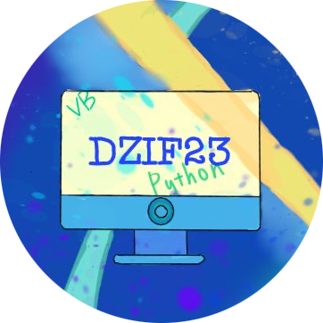

<!DOCTYPE html>
<html style="font-size: 16px;">
  <head>
    <meta name="viewport" content="width=device-width, initial-scale=1.0">
    <meta charset="utf-8">
    <meta name="keywords" content="">
    <meta name="description" content="">
    <title>一社一服務</title>
    <link rel="stylesheet" href="nicepage.css" media="screen">
<link rel="stylesheet" href="一社一服務.css" media="screen">
    <script class="u-script" type="text/javascript" src="jquery.js" defer=""></script>
    <script class="u-script" type="text/javascript" src="nicepage.js" defer=""></script>
    <meta name="generator" content="Nicepage 4.11.3, nicepage.com">
    <link id="u-theme-google-font" rel="stylesheet" href="https://fonts.googleapis.com/css?family=Roboto:100,100i,300,300i,400,400i,500,500i,700,700i,900,900i|Open+Sans:300,300i,400,400i,500,500i,600,600i,700,700i,800,800i">
    
    
    
    
    
    
    
    
    <script type="application/ld+json">{
		"@context": "http://schema.org",
		"@type": "Organization",
		"name": "DZIF23rd",
		"logo": "images/14261756532220-modified.png",
		"sameAs": [
				"https://instagram.com/dzif_23rd?igshid=YmMyMTA2M2Y="
		]
}</script>
    <meta name="theme-color" content="#478ac9">
    <meta property="og:title" content="一社一服務">
    <meta property="og:description" content="">
    <meta property="og:type" content="website">
  </head>
  <body class="u-body u-xl-mode"><header class="u-clearfix u-header u-header" id="sec-8ae3"><div class="u-clearfix u-sheet u-valign-middle u-sheet-1">
        <a href="主頁.html" data-page-id="66771256" class="u-image u-logo u-image-1" data-image-width="362" data-image-height="362" title="Home">
          
        </a>
        <nav class="u-menu u-menu-dropdown u-offcanvas u-menu-1">
          <div class="menu-collapse" style="font-size: 1rem; letter-spacing: 0px;">
            <a class="u-button-style u-custom-left-right-menu-spacing u-custom-padding-bottom u-custom-top-bottom-menu-spacing u-nav-link u-text-active-palette-1-base u-text-hover-palette-2-base" href="#">
              <svg class="u-svg-link" viewBox="0 0 24 24"><use xmlns:xlink="http://www.w3.org/1999/xlink" xlink:href="#menu-hamburger"></use></svg>
              <svg class="u-svg-content" version="1.1" id="menu-hamburger" viewBox="0 0 16 16" x="0px" y="0px" xmlns:xlink="http://www.w3.org/1999/xlink" xmlns="http://www.w3.org/2000/svg"><g><rect y="1" width="16" height="2"></rect><rect y="7" width="16" height="2"></rect><rect y="13" width="16" height="2"></rect>
</g></svg>
            </a>
          </div>
          <div class="u-custom-menu u-nav-container">
            <ul class="u-nav u-unstyled u-nav-1"><li class="u-nav-item"><a class="u-button-style u-nav-link u-text-active-palette-1-base u-text-hover-palette-2-base" href="主頁.html" style="padding: 10px 20px;">主頁</a>
</li><li class="u-nav-item"><a class="u-button-style u-nav-link u-text-active-palette-1-base u-text-hover-palette-2-base" href="成員名單.html" style="padding: 10px 20px;">成員名單</a>
</li><li class="u-nav-item"><a class="u-button-style u-nav-link u-text-active-palette-1-base u-text-hover-palette-2-base" href="社課規劃.html" style="padding: 10px 20px;">社課規劃</a>
</li><li class="u-nav-item"><a class="u-button-style u-nav-link u-text-active-palette-1-base u-text-hover-palette-2-base" href="一社一服務.html" style="padding: 10px 20px;">一社一服務</a>
</li><li class="u-nav-item"><a class="u-button-style u-nav-link u-text-active-palette-1-base u-text-hover-palette-2-base" href="社團紀錄.html" style="padding: 10px 20px;">社團紀錄</a>
</li></ul>
          </div>
          <div class="u-custom-menu u-nav-container-collapse">
            <div class="u-black u-container-style u-inner-container-layout u-opacity u-opacity-95 u-sidenav">
              <div class="u-inner-container-layout u-sidenav-overflow">
                <div class="u-menu-close"></div>
                <ul class="u-align-center u-nav u-popupmenu-items u-unstyled u-nav-2"><li class="u-nav-item"><a class="u-button-style u-nav-link" href="主頁.html">主頁</a>
</li><li class="u-nav-item"><a class="u-button-style u-nav-link" href="成員名單.html">成員名單</a>
</li><li class="u-nav-item"><a class="u-button-style u-nav-link" href="社課規劃.html">社課規劃</a>
</li><li class="u-nav-item"><a class="u-button-style u-nav-link" href="一社一服務.html">一社一服務</a>
</li><li class="u-nav-item"><a class="u-button-style u-nav-link" href="社團紀錄.html">社團紀錄</a>
</li></ul>
              </div>
            </div>
            <div class="u-black u-menu-overlay u-opacity u-opacity-70"></div>
          </div>
        </nav>
      </div></header>
    <section class="u-align-center u-clearfix u-image u-shading u-section-1" src="" data-image-width="1280" data-image-height="960" id="sec-015c">
      <div class="u-clearfix u-sheet u-valign-middle u-sheet-1">
        <h1 class="u-text u-text-default u-title u-text-1" data-animation-name="customAnimationIn" data-animation-duration="1000">一社一服務</h1>
        <p class="u-large-text u-text u-text-variant u-text-2" data-animation-name="customAnimationIn" data-animation-duration="1000">上機考複習小講座</p>
      </div>
    </section>
    <section class="u-align-left u-clearfix u-gradient u-section-2" id="sec-66c1">
      <div class="u-clearfix u-sheet u-valign-middle u-sheet-1">
        <div class="fr-view u-clearfix u-rich-text u-text u-text-1" data-animation-name="customAnimationIn" data-animation-duration="1000" data-animation-direction="">
          <h2 style="text-align: left;">
            <span style="line-height: 2; font-size: 3rem;">服務理念：為何舉辦？</span>
          </h2>
          <p style="text-align: left; line-height: 1.8;">
            <span style="font-size: 1.25rem;">還沒升上高二前，我們經歷了高一時期準備上機考的階段。當時的學長姐（22屆資訊社）舉辦過一社一服務的上機考複習，我們也想繼續延續這項活動。上機考對於大部分的高一新生來說是一個相對吃力的考試，因為不同於國中國小時期使用的圖像類型程式（如：Scratch），高中要求的內容是難度高的純文字程式語言C++，題目程度更提高不少，除了平時需要基本觀念之外，更看重反覆練習。</span>
          </p>
          <p style="text-align: left; line-height: 1.8;">
            <span style="font-size: 1.25rem;">有鑑於此，我們想利用「解題」的方式，同時可以出題讓學弟妹練習，又能藉由簡報一行行的說明解釋程式中較為細節之處，一舉兩得。</span>
          </p>
          <p style="text-align: left;">
            <br>
          </p>
          <h2 id="isPasted" style="line-height: 2;">
            <span style="font-size: 3rem;">問題與解決：如何改變形式並提升效率？</span>
          </h2>
          <p style="line-height: 1.8;">
            <span style="font-size: 1.25rem;">（高一時期）參與上一屆學長姐舉辦的上機考複習後，我們發現了一些問題，例如：若和以往一樣在演講廳舉辦「聽講類型」的模式，容易像去年一樣造成「學長姐很認真在台上講解」但學弟妹「不小心在台下睡著」（尤其是活動選擇在午休時間）或是「看不清楚」的問題，因此，我們決定改在電腦教室進行。</span>
          </p>
          <p style="line-height: 1.8;">
            <span style="font-size: 1.25rem;">改在電腦教室舉行後，卻又發現因為場地大小限制無法一次容納所有想要參加的學弟妹，只好將活動分不同天進行，雖然會影響一些人的權益，但大概就是最有效率的方式吧！</span>
          </p>
        </div>
      </div>
    </section>
    <section class="u-clearfix u-grey-5 u-section-3" id="sec-a576">
      <div class="u-clearfix u-sheet u-valign-middle u-sheet-1">
        <div class="u-clearfix u-expanded-width u-gutter-10 u-layout-wrap u-layout-wrap-1">
          <div class="u-layout" style="">
            <div class="u-layout-row" style="">
              <div class="u-container-style u-layout-cell u-left-cell u-size-23 u-size-xs-60 u-layout-cell-1" src="" data-animation-name="customAnimationIn" data-animation-duration="1000" data-animation-direction="">
                <div class="u-container-layout u-container-layout-1">
                  <h2 class="u-align-center u-text u-text-1">上機考複習小講座<br>報名表單
                  </h2>
                  <p class="u-align-center u-text u-text-2">藉由高一社員的幫忙將表單發送至各班班群。共有46人報名，最後參與人數約55人</p>
                  <a href="https://docs.google.com/spreadsheets/d/1jsEypd94KMvr8pNUeCfDRUGnK-5v5bbez1unnH3_rM8/edit?usp=sharing" class="u-btn u-btn-round u-button-style u-radius-50 u-btn-1" target="_blank">查看表單回覆</a>
                </div>
              </div>
              <div class="u-align-center u-container-style u-image u-layout-cell u-right-cell u-size-37 u-size-xs-60 u-image-1" src="" data-image-width="912" data-image-height="394" data-animation-name="customAnimationIn" data-animation-duration="1000" data-animation-direction="">
                <div class="u-container-layout u-valign-middle u-container-layout-2" src=""></div>
              </div>
            </div>
          </div>
        </div>
      </div>
    </section>
    <section class="u-align-left u-clearfix u-gradient u-section-4" id="carousel_a6ca">
      <div class="u-clearfix u-sheet u-valign-middle u-sheet-1">
        <div class="fr-view u-clearfix u-rich-text u-text u-text-1" data-animation-name="customAnimationIn" data-animation-duration="1000" data-animation-direction="">
          <h2 style="text-align: left;">
            <span style="line-height: 2; font-size: 3rem;">一社一服務：心得</span>
          </h2>
          <p style="text-align: left; line-height: 1.8;">
            <span style="font-size: 1.5rem;">
              <span style="font-weight: 700;">陳竑鈞</span>
            </span>
            <span style="font-size: 1.25rem;">：籌備一社一服務的意旨在於，一是傳承資訊社的傳統，二是提升莘莘學子們的資訊能力。我們渴望的是使對資訊不熟悉的人能夠在上機考中獲得足夠的成績，並使已有資訊水準的人更加精進。而我擔任的是教學職位，因此由我準備練習的題目與負責講解。前置作業其實遭遇了很多時間上的困難，尤是配合學校作息和考試時間上的調整，還有教學內容與課程時間的搭配，都面臨了很多衝突，但在精心濃縮內容與詢問師長意見後，這些事情都已順利解決。自己的付出與私人的獲得往往是不成正比的，但成效卻可以是非己的社會利益，猶如此次，我們花了很多時間統籌，為了學弟妹著想，對自己沒有任何好處，但是這背後其實提升了他們的資訊與思維能力，對於社會的福祉其實正默默的在發生，而非看似的無益。</span>
          </p>
          <p style="text-align: left; line-height: 1.8;">
            <br>
          </p>
          <p id="isPasted" style="line-height: 1.8;">
            <span style="font-size: 1.5rem; font-weight: 700;">劉柏勛</span>
            <span style="font-size: 1.25rem;">：之前高一的時候我們的學長姐也有辦這個一社一服務的活動，那時候我也有參加，那時就覺得這蠻有意義的，可能就是因為我有參加那活動所以我高一的上機考考得還不錯，至少有超出預期。現在換到我們做了，不知道為什麼實際來到我們活動的人比我想像中還要少，可能是一開始我們的散布消息的方式比較少，只有透過高一的社員幫忙跟自己班級的人講，我需要做的事只有幫忙借鑰匙，因為教學的事我完全做不來，在中午去借鑰匙的時候都會遇到很兇的老師，每次去都覺得怕怕的。看到資訊教室坐滿了人，算是蠻欣慰的，大部分的人都很認真地在上，可能就是有被當的壓力，能夠幫助到他們是我們的榮幸啦，雖然教學根本不算在我的工作範圍，我只能用我高一所獲得到的知識幫助他們。</span>
          </p>
          <p style="line-height: 1.8;">
            <br>
          </p>
          <p style="line-height: 1.8;">
            <span style="font-size: 1.5rem; font-weight: 700;">尤希聖</span>
            <span style="font-size: 1.25rem;">：這次的一社一服務，有了之前高一時看到學長姐當初舉辦時的經驗，我們這次決定縮小活動規模，並且報名方式採用google表單填寫。因為如果用到大教室，不只我們會有點名上的困難，因為無法同時照顧到很多人，加上並沒有讓大家實際用電腦自己寫一遍，很多學弟妹如果只單純用聽的話，會覺得聽我們講好像很簡單，但是當結束之後自己練習時就會發現這裡看不懂，那裡不知道要怎麼實現而放棄。學弟妹也可能會因為過程無聊或者遇到不懂的地方，因為不好意思在那麼多人面前問。寫程式是一個連環的過程，如果有一個地方卡住，那很有可能接下來，你就會直接爆炸，而導致你來聽我們上機考複習但最後卻沒有效果。聽了而沒有收穫這並不是我們舉辦上機考複習活動希望發生的事，我們希望來參加的都是真心想要自己在接下來的上機考中可以拿到更高分，因此我們也不希望有人來參加活動只是為了不想待在教室，然後跑過來玩手機，這樣不只不尊重在上面講解的幹部，我們也會因此而感到心累，最後面沒有講解的動力。幸好這次因為採用表單的方式，已經有效過濾了很多無心聽講的學弟妹。這次在下面看看學弟妹是否有問題時，令人感到欣慰的是，大家都有自己在嘗試練習，有些人遇到不會的也會主動去問在下面看是否有需要幫助的學長。最後，也很開心聽到資訊老師說這次學弟妹的上機考結果還不錯，感覺幫學弟妹複習上機考試值得的。</span>
          </p>
        </div>
      </div>
    </section>
    <section class="u-align-left u-clearfix u-section-5" id="sec-a335">
      <div class="u-clearfix u-sheet u-sheet-1">
        <div class="fr-view u-clearfix u-rich-text u-text u-text-1" data-animation-name="customAnimationIn" data-animation-duration="1000">
          <h1 style="text-align: left;">
            <span style="line-height: 2.0;">幹部感言</span>
          </h1>
          <p style="text-align: left; line-height: 1.8;">
            <span style="font-size: 1.5rem; font-weight: 700;">王中靖</span>
            <span style="font-size: 1.25rem;">：我是資訊社的公關，主要的工作基本上是使用IG處理大部分資訊社的活動以及外交，例如:幫營隊宣傳活動課程以及好康的資訊、與其他以資訊為主的社團進行建交成為友社、爭取能與其他友社合作的活動，不過因為疫情影響，使所有活動皆無法進行，非常可惜。回想起我剛接幹時，其實我完全沒有關於這類的經驗，只是沒有人想接公關，學長才把這個重責大任交給我來擔任，原本是不會創社團帳號甚至是連限時動態也不會發的我，但多虧了社長的細心指導，我慢慢的學習到使用社交軟體的精神與訣竅，如果有不懂的地方，他都會一一告訴我，因此我非常感謝他。在上社課時，我看著我們的教學溫柔地教著學弟妹們，看著社長充滿著熱情在台上講解事務，一想到幹部們可靠且熱血的樣子，我心想我能夠待在資訊社，成為幹部的一員真的是太好了。</span>
          </p>
        </div>
      </div>
    </section>
    <section class="u-align-left u-clearfix u-grey-10 u-section-6" id="sec-e527">
      <div class="u-clearfix u-sheet u-sheet-1">
        <div class="fr-view u-clearfix u-rich-text u-text u-text-1" data-animation-name="customAnimationIn" data-animation-duration="1000">
          <h1 style="text-align: left;">
            <span style="line-height: 2.0;">檢討與傳承</span>
          </h1>
          <p style="text-align: left; line-height: 1.8;">
            <span style="font-size: 1.25rem;">雖然說一社一服務並沒有硬性規定服務的內容，不過基本上建議學弟妹以相近社團類型為優先選擇。若考慮像是教學類型的課程，需要換位思考以學弟妹或是參與者的角度思考對方的需求與感受，例如：大部分的人是否可以接受開課時間？怎麼樣的場地比較適合？是否需要事先報名？等等，推薦可以善用Google表單作為報名的方式，也務必留下社團的聯絡方式，讓那些有疑問的人在事後可以得到解答。</span>
          </p>
          <p style="text-align: left; line-height: 1.8;">
            <span style="font-size: 1.25rem;">一社一服務的目的並不是要幫助很多的人，而是要讓有需要的人得到協助；服務的人可以從中學習團隊溝通與辦活動的經驗，雖然是無償服務，但卻能得到更有價值的學習 - 助人的快樂。</span>
          </p>
        </div>
      </div>
    </section>
    <section class="u-carousel u-slide u-block-0cac-1" id="carousel_49d9" data-interval="5000" data-u-ride="false">
      <ol class="u-absolute-hcenter u-carousel-indicators u-block-0cac-2">
        <li data-u-target="#carousel_49d9" class="u-active u-grey-30" data-u-slide-to="0"></li>
        <li data-u-target="#carousel_49d9" class="u-grey-30" data-u-slide-to="1"></li>
        <li data-u-target="#carousel_49d9" class="u-grey-30" data-u-slide-to="2"></li>
        <li data-u-target="#carousel_49d9" class="u-grey-30" data-u-slide-to="3"></li>
        <li data-u-target="#carousel_49d9" class="u-grey-30" data-u-slide-to="4"></li>
      </ol>
      <div class="u-carousel-inner" role="listbox">
        <div class="u-active u-align-center u-carousel-item u-clearfix u-image u-shading u-section-7-1" src="" data-image-width="1280" data-image-height="591">
          <div class="u-clearfix u-sheet u-valign-middle u-sheet-1">
            <h1 class="u-text u-text-default u-title u-text-1">一社一服務 - 活動照片</h1>
          </div>
        </div>
        <div class="u-align-center u-carousel-item u-clearfix u-image u-section-7-2" src="" data-image-width="1280" data-image-height="591">
          <div class="u-align-left u-clearfix u-sheet u-sheet-1"></div>
        </div>
        <div class="u-align-center u-carousel-item u-clearfix u-image u-section-7-3" src="" data-image-width="1280" data-image-height="960">
          <div class="u-align-left u-clearfix u-sheet u-sheet-1"></div>
        </div>
        <div class="u-align-center u-carousel-item u-clearfix u-image u-section-7-4" src="" data-image-width="1280" data-image-height="960">
          <div class="u-align-left u-clearfix u-sheet u-sheet-1"></div>
        </div>
        <div class="u-align-center u-carousel-item u-clearfix u-image u-section-7-5" src="" data-image-width="1280" data-image-height="960">
          <div class="u-align-left u-clearfix u-sheet u-sheet-1"></div>
        </div>
      </div>
      <a class="u-absolute-vcenter u-carousel-control u-carousel-control-prev u-text-grey-30 u-block-0cac-3" href="#carousel_49d9" role="button" data-u-slide="prev">
        <span aria-hidden="true">
          <svg class="u-svg-link" viewBox="0 0 477.175 477.175"><path d="M145.188,238.575l215.5-215.5c5.3-5.3,5.3-13.8,0-19.1s-13.8-5.3-19.1,0l-225.1,225.1c-5.3,5.3-5.3,13.8,0,19.1l225.1,225
                    c2.6,2.6,6.1,4,9.5,4s6.9-1.3,9.5-4c5.3-5.3,5.3-13.8,0-19.1L145.188,238.575z"></path></svg>
        </span>
        <span class="sr-only">Previous</span>
      </a>
      <a class="u-absolute-vcenter u-carousel-control u-carousel-control-next u-text-grey-30 u-block-0cac-4" href="#carousel_49d9" role="button" data-u-slide="next">
        <span aria-hidden="true">
          <svg class="u-svg-link" viewBox="0 0 477.175 477.175"><path d="M360.731,229.075l-225.1-225.1c-5.3-5.3-13.8-5.3-19.1,0s-5.3,13.8,0,19.1l215.5,215.5l-215.5,215.5
                    c-5.3,5.3-5.3,13.8,0,19.1c2.6,2.6,6.1,4,9.5,4c3.4,0,6.9-1.3,9.5-4l225.1-225.1C365.931,242.875,365.931,234.275,360.731,229.075z"></path></svg>
        </span>
        <span class="sr-only">Next</span>
      </a>
    </section>
    
    
    <footer class="u-align-center-md u-align-center-sm u-align-center-xs u-clearfix u-footer u-grey-80" id="sec-4cd6"><div class="u-clearfix u-sheet u-sheet-1">
        <nav class="u-menu u-menu-dropdown u-offcanvas u-menu-1">
          <div class="menu-collapse" style="font-size: 1rem; letter-spacing: 0px; font-weight: 700; text-transform: uppercase;">
            <a class="u-button-style u-custom-active-border-color u-custom-border u-custom-border-color u-custom-borders u-custom-hover-border-color u-custom-padding-bottom u-custom-text-active-color u-custom-text-color u-custom-text-hover-color u-custom-top-bottom-menu-spacing u-nav-link" href="#" style="padding: 1px 0px; font-size: calc(1em + 2px);">
              <svg class="u-svg-link" viewBox="0 0 24 24"><use xmlns:xlink="http://www.w3.org/1999/xlink" xlink:href="#svg-fb2c"></use></svg>
              <svg class="u-svg-content" version="1.1" id="svg-fb2c" viewBox="0 0 16 16" x="0px" y="0px" xmlns:xlink="http://www.w3.org/1999/xlink" xmlns="http://www.w3.org/2000/svg"><g><rect y="1" width="16" height="2"></rect><rect y="7" width="16" height="2"></rect><rect y="13" width="16" height="2"></rect>
</g></svg>
            </a>
          </div>
          <div class="u-custom-menu u-nav-container">
            <ul class="u-nav u-spacing-30 u-unstyled u-nav-1"><li class="u-nav-item"><a class="u-border-2 u-border-active-palette-1-base u-border-hover-palette-1-base u-border-no-left u-border-no-right u-border-no-top u-button-style u-nav-link u-text-active-white u-text-grey-30 u-text-hover-palette-1-light-2" href="主頁.html" style="padding: 10px 0px;">主頁</a>
</li><li class="u-nav-item"><a class="u-border-2 u-border-active-palette-1-base u-border-hover-palette-1-base u-border-no-left u-border-no-right u-border-no-top u-button-style u-nav-link u-text-active-white u-text-grey-30 u-text-hover-palette-1-light-2" href="成員名單.html" style="padding: 10px 0px;">成員名單</a>
</li><li class="u-nav-item"><a class="u-border-2 u-border-active-palette-1-base u-border-hover-palette-1-base u-border-no-left u-border-no-right u-border-no-top u-button-style u-nav-link u-text-active-white u-text-grey-30 u-text-hover-palette-1-light-2" href="社課規劃.html" style="padding: 10px 0px;">社課規劃</a>
</li><li class="u-nav-item"><a class="u-border-2 u-border-active-palette-1-base u-border-hover-palette-1-base u-border-no-left u-border-no-right u-border-no-top u-button-style u-nav-link u-text-active-white u-text-grey-30 u-text-hover-palette-1-light-2" href="一社一服務.html" style="padding: 10px 0px;">一社一服務</a>
</li><li class="u-nav-item"><a class="u-border-2 u-border-active-palette-1-base u-border-hover-palette-1-base u-border-no-left u-border-no-right u-border-no-top u-button-style u-nav-link u-text-active-white u-text-grey-30 u-text-hover-palette-1-light-2" href="社團紀錄.html" style="padding: 10px 0px;">社團紀錄</a>
</li></ul>
          </div>
          <div class="u-custom-menu u-nav-container-collapse">
            <div class="u-black u-container-style u-inner-container-layout u-opacity u-opacity-95 u-sidenav">
              <div class="u-inner-container-layout u-sidenav-overflow">
                <div class="u-menu-close"></div>
                <ul class="u-align-center u-nav u-popupmenu-items u-unstyled u-nav-2"><li class="u-nav-item"><a class="u-button-style u-nav-link" href="主頁.html">主頁</a>
</li><li class="u-nav-item"><a class="u-button-style u-nav-link" href="成員名單.html">成員名單</a>
</li><li class="u-nav-item"><a class="u-button-style u-nav-link" href="社課規劃.html">社課規劃</a>
</li><li class="u-nav-item"><a class="u-button-style u-nav-link" href="一社一服務.html">一社一服務</a>
</li><li class="u-nav-item"><a class="u-button-style u-nav-link" href="社團紀錄.html">社團紀錄</a>
</li></ul>
              </div>
            </div>
            <div class="u-black u-menu-overlay u-opacity u-opacity-70"></div>
          </div>
        </nav>
        <p class="u-align-center-lg u-align-center-md u-align-center-xl u-text u-text-1">DZIF 23rd</p>
        <div class="u-social-icons u-spacing-10 u-social-icons-1">
          <a class="u-social-url" title="instagram" target="_blank" href="https://instagram.com/dzif_23rd?igshid=YmMyMTA2M2Y="><span class="u-icon u-social-icon u-social-instagram u-icon-1"><svg class="u-svg-link" preserveAspectRatio="xMidYMin slice" viewBox="0 0 112 112" style=""><use xmlns:xlink="http://www.w3.org/1999/xlink" xlink:href="#svg-2e8e"></use></svg><svg class="u-svg-content" viewBox="0 0 112 112" x="0" y="0" id="svg-2e8e"><circle fill="currentColor" cx="56.1" cy="56.1" r="55"></circle><path fill="#FFFFFF" d="M55.9,38.2c-9.9,0-17.9,8-17.9,17.9C38,66,46,74,55.9,74c9.9,0,17.9-8,17.9-17.9C73.8,46.2,65.8,38.2,55.9,38.2
z M55.9,66.4c-5.7,0-10.3-4.6-10.3-10.3c-0.1-5.7,4.6-10.3,10.3-10.3c5.7,0,10.3,4.6,10.3,10.3C66.2,61.8,61.6,66.4,55.9,66.4z"></path><path fill="#FFFFFF" d="M74.3,33.5c-2.3,0-4.2,1.9-4.2,4.2s1.9,4.2,4.2,4.2s4.2-1.9,4.2-4.2S76.6,33.5,74.3,33.5z"></path><path fill="#FFFFFF" d="M73.1,21.3H38.6c-9.7,0-17.5,7.9-17.5,17.5v34.5c0,9.7,7.9,17.6,17.5,17.6h34.5c9.7,0,17.5-7.9,17.5-17.5V38.8
C90.6,29.1,82.7,21.3,73.1,21.3z M83,73.3c0,5.5-4.5,9.9-9.9,9.9H38.6c-5.5,0-9.9-4.5-9.9-9.9V38.8c0-5.5,4.5-9.9,9.9-9.9h34.5
c5.5,0,9.9,4.5,9.9,9.9V73.3z"></path></svg></span>
          </a>
        </div>
      </div></footer>
    <section class="u-backlink u-clearfix u-grey-80">
      <a class="u-link" href="https://nicepage.com/website-templates" target="_blank">
        <span>Website Templates</span>
      </a>
      <p class="u-text">
        <span>created with</span>
      </p>
      <a class="u-link" href="" target="_blank">
        <span>Website Builder Software</span>
      </a>. 
    </section>
  </body>
</html>